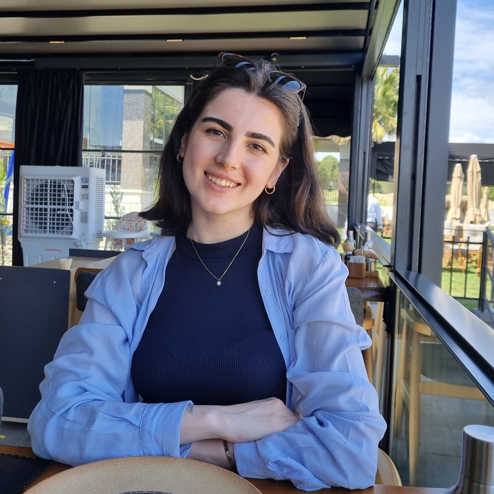

Benim Hikayem
Merhaba, ben Cansu Çaykara. Noir markasını, el sanatlarına olan ilgim ve tasarımlarımı hayata geçirme fikriyle oluşturdum. Noir, özgün ve özel tasarımlarla el işçiliğini birleştirerek sizlere sunan bir zanaat markasıdır. Sizlerle bu benzersiz deneyimi paylaşmaktan büyük mutluluk duyuyorum.
Marka Felsefesi
Noir, sadece bir aksesuar değil, aynı zamanda kendinizi ifade etme şekli sunar. Özgünlük, ürünlerimizin temel taşıdır. Sıradanlıktan uzak, özel bir tarza sahip olan Noir, her bir ürününü %100 el işçiliğiyle ve özenle oluşturur. Amacımız, her tarzı yansıtan benzersiz ve özel parçalar üretmektir.